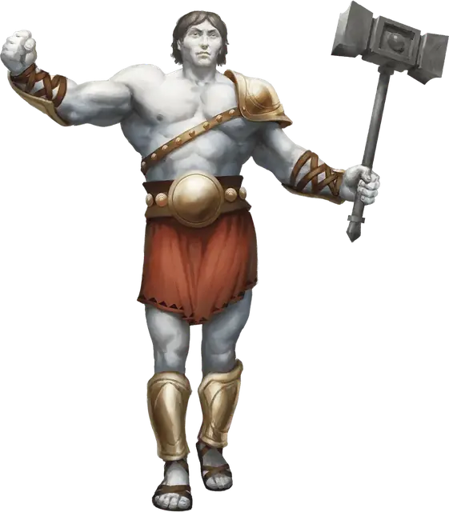

Эмпирей
Empyrean
Огромный Небожитель (Титан), Нейтральный

Класс Защиты 22 Инициатива +19 (29)
Хиты 346 (21к12 + 210)
Скорость 50 футов, Плавания 50 футов, Полёта 50 футов (парит)
| мод | спас | ||
|---|---|---|---|
| СИЛ | 30 | +10 | +17 |
| ЛОВ | 21 | +5 | +5 |
| ТЕЛ | 30 | +10 | +10 |
| мод | спас | ||
|---|---|---|---|
| ИНТ | 21 | +5 | +5 |
| МДР | 22 | +6 | +13 |
| ХАР | 27 | +8 | +8 |
Сопротивление урону Дробящий, Колющий, Рубящий
Иммунитеты Излучение, Некротический
Чувства пассивное Восприятие 23, Истинное зрение 120 футов
Языки Все
Опасность 23 (50 000 опыта; БВ +7)
Особенности
Легендарное сопротивление (4/день). Если эмпирей проваливает спасбросок, он вместо этого может в нём преуспеть.
Сопротивление магии. Эмпирей совершает с Преимуществом спасброски от заклинаний и прочих магических эффектов.
Действия
Мультиатака. Эмпирей совершает две атаки Священным оружием или Божественным лучом в любой комбинации.
Священное оружие. Бросок рукопашной атаки: +17, досягаемость 10 фт. Попадание: 31 (6к6 + 10) Силового урона, и цель Ошеломлена до начала следующего хода эмпирея. Цель может выбрать не получать состояние Ошеломлённый; в этом случае она получает 21 дополнительного Силового урона, не снижаемого Сопротивлением или Иммунитетом.
Божественный луч. Бросок дальнобойной атаки: +15, дистанция 600 фт. Попадание: 35 (6к8 + 8) Некротического урона или урона Излучением (по выбору эмпирея).
Сотворение заклинаний. Эмпирей сотворяет одно из следующих заклинаний, не нуждаясь в Материальных компонентах (заклинательная характеристика — Харизма, Сл спасброска заклинаний 23):
Неограниченно: Бесследное передвижение, Высшее восстановление, Подводное дыхание, Умиротворение
1/день каждое: Общение, Планарный переход, Рассеивание зла и добра
Легендарные действия
У этого существа есть 3 использования Легендарных действий; оно может немедленно после окончания хода другого существа потратить одно использование, чтобы совершить одно из следующих действий. Существо восполняет все потраченные использования в начале каждого своего хода.
Ободрение. Эмпирей получает 10 Временных хитов; эмпирей и все его союзники в пределах 30 футов от него совершают Тесты к20 с Преимуществом до конца следующего хода эмпирея. Эмпирей не может совершить это действие снова до начала своего следующего хода.
Ударная волна триумфа. Спасбросок Телосложения: Сл 23, каждое существо в 30-футовой Эманации, исходящей от эмпирея. Провал: 27 (6к8) Силового урона, и цель Опрокидывается. Успех: Только половина урона. Провал или успех: Эмпирей не может совершить это действие повторно до начала своего следующего хода.
Воздаяние. Эмпирей совершает одну атаку Божественным лучом.
Бонус мастерства +7
Среда обитания Любая
Сокровища Реликварные
Эмпиреи
Отпрыски богов
Эмпиреи — это порождения божеств. Не будучи богами сами по себе, они, однако, несут в себе влияние и силы, родственные их неземным родителям. Некоторые эмпиреи приближаются по статусу к полубогам с фантастическим могуществом и властью перекраивать судьбы смертных. Другие же — не более чем гордые помыслы, облечённые плотью, или мимолётные крупицы бессмертного внимания. Кем бы они ни были — идеализированными сущностями или отголосками святого, — их облик неизменно несёт на себе печать своего творца.
Совершите бросок по таблице «Божественный след» для вдохновения или выберите сами, какие аспекты божественности проступают в телесном обличье эмпирея.
Божественный след
| 1к6 | Эмпирей выглядит… |
| 1 | Уравновешенно, естественно — либо наводит на мысль о неустанно следящих очах. |
| 2 | Ярко, призрачно или текуче — либо меняется в зависимости от взирающего. |
| 3 | Утешительно и мягко — либо пробуждает в созерцателях приятные воспоминания. |
| 4 | Хаотично — разъединённые части тела, зримые помыслы или блуждающие очертания. |
| 5 | Подобно механизму, бесстрастно, симметрично — либо наводит на мысль о грядущем суде. |
| 6 | Мрачно, угрожающе или чудовищно — либо воплощают собой страхи глядящего. |
Эмпиреи, наследники божественной мощи, — это идеализированные человекоподобные существа с силой богов. Их отношения с создателями могут напоминать отношения родителей и детей, монархов и подданных, творцов и их творений и многие иные. На бытие эмпиреев неизгладимый отпечаток накладывают их покровители, а также связь с небесными божествами Верхних Планов либо инфернальными владыками Нижних. Так или иначе, эмпиреи обладают свободой воли.
Эмпиреи-небожители обычно предстают благородными созданиями, что странствуют в поисках свершений и стремятся доказать, что они достойны своей небесной крови. Многие служат своим родителям или поддерживают дела и поборников этих богов.
Эмпиреи-исчадия по большей части — грозные себялюбивые злодеи, чающие присвоить силу прародителей. Одни собирают нечестивые рати, другие правят сокрытыми царствами в подражании истинным богам, а третьи ищут лишь одного: бежать прочь от своей проклятой семьи.